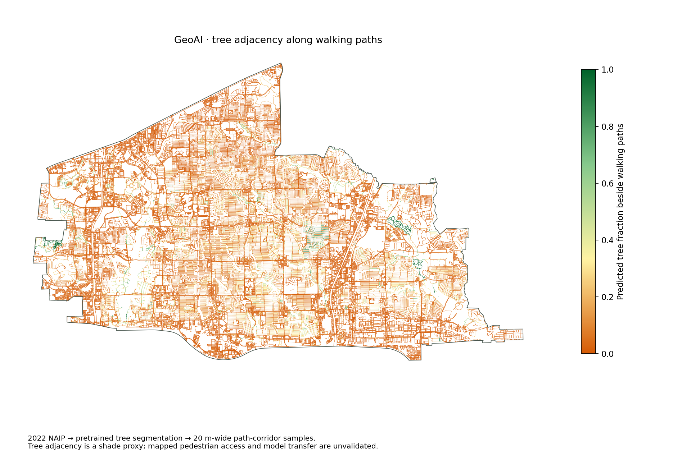

How EmPath works
Measure the surroundings. Score each path. Find the lowest-cost walks. Rank residential blocks.
Imagery & public data→Walking segments→Routes to places→Ranked residential blocks
1. Read the landscape

GeoAI tree adjacency · paths
A pretrained Restor TCD model first classifies aerial imagery into a tree raster. We sample a 20-meter-wide corridor beside each walking segment, then color those vector paths by nearby tree fraction. The separate census-block layer summarizes tree cover over whole blocks. Nearby trees are a shade proxy, not measured shade.

Heat
Summer Landsat surface temperatures describe the heat context around each path. They are not current weather or sidewalk air temperatures.

Traffic
TxDOT counts describe nearby road volume. Higher volume increases modeled friction; it is not a measured collision risk.
2. Score each walking segment
Start with walking time. Add a penalty for sparse trees, heat and traffic.
LPath length in meters.
CNearby tree cover, 0–1.
HHeat index, 0–1.
QTraffic index, 0–1.
We assume a walking speed of 1.2 m/s. Squaring the tree-cover deficit strongly penalizes exposed paths. Heat amplifies that penalty; traffic adds another cost. The coefficient 6 is a chosen preference, not a learned behavioral weight.
The result is modeled effort in equivalent seconds—not the actual duration of the walk.
3. From path costs to residential scores
- Add the segments. A route’s cost is the sum of its walking-edge costs.
- Find the best route to each category. Dijkstra’s algorithm finds the lowest-cost route to each mapped candidate. Keep the lowest cost for each selected category.
- Average those category costs. Each selected category has equal importance. Rank residential census blocks from lowest average cost to highest.
b is a residential block; K is your selected categories; Dₖ is the mapped destinations in category k. Routes start at the block’s reference point. A typed home address selects its containing residential block.
The walking-time comparison uses the same graph, origins and destination catalog, with environmental penalties removed. It can choose a different nearest destination within a category. Route comparisons use the same start and destination.
Blue-to-red colors show lower-to-higher costs. The display clips at the 2nd and 98th percentiles; this changes colors, not routing weights. Gray blocks are non-residential. Pale amber residential blocks lack a complete ranking.
Coverage and boundary effects
Where we rank homes
Residential census blocks inside the official Plano municipal boundary.
Where we search for routes
The walking network and destination catalog extend 3 km beyond Plano, so the city boundary does not cut trips off immediately.
A ranked block must have recorded housing, a reference point within 100 meters of the walking graph, and routes to every selected category.
Any route leaving the mapped extent must first reach its outer boundary. We compare trip cost with a conservative lower bound for reaching that boundary. Trips that fail this check may have a better alternative outside the search area.
Walking-network gaps, unverified entrances and crossings remain limitations. Search-extent checks do not verify pedestrian access or safety.
Housing, population and map resolution
Residential blocks
Origins, 2020 population density and block-level environmental summaries.
Block groups & tracts
2020–2024 ACS housing and demographic estimates. Disability context uses tracts.
Rent and home value describe Census areas, not individual listings. Their 90% margins of error are shown with the values. These statistics do not change route costs. Clipping a polygon to Plano does not create finer measurements.
What has been tested?
Checked
Finite nonnegative weights, route-to-score consistency, shortest-path calculations, geographic coverage and interface behavior.
Still to validate
Local tree-classification accuracy, actual shade, pedestrian comfort and route preferences, sidewalk continuity and crossings.
Across all 25 categories, 744 of 2,346 eligible residential blocks move at least 10 cost-percentile points compared with walking time alone. Rank correlation is 0.931. That demonstrates a model difference, not improved real-world accuracy.
See the comparison maps →How to test it with people
- Have volunteers compare two routes to the same destination and record which they prefer, without showing the model ranking first.
- Compare those choices with EmPath and the walking-time baseline. Hold out participants and routes when calibrating weights; report choice accuracy and uncertainty.
- Audit sampled segments against imagery and field observations. Check predicted trees, actual time-specific shade, sidewalks and crossings separately.
- Repeat across neighborhoods, times of day and self-selected mobility needs. A preference study does not validate medical safety.
Sources and reproducibility
OpenStreetMap / GeofabrikCity of PlanoUSDA NAIP · 2022Restor TCD · SegFormer-B0USGS Landsat · summer 2025TxDOT traffic counts2020 CensusACS · 2020–2024
The project repository contains the data-preparation scripts, imagery processing, feature joins, routing exports and comparison calculations. Reproducing it requires the same source versions and model settings.
Project repository →Scaling to another city
Fremont, San José, Richardson and Irving are potential next locations. Replace the boundary, acquire local network and environmental data, recalculate reference distributions, and repeat route and imagery checks. Their results have not yet been produced.